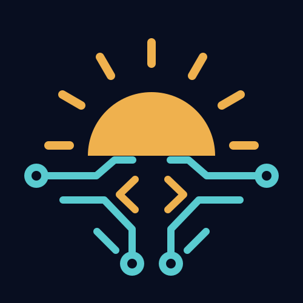

Engineering ideas.
Building possibility.
Hi, I’m Wallace. I connect an electrical and electronic engineering background with a growing passion for software—turning questions into practical projects.

01 / SELECTED WORK
From curiosity
to something tangible.
A collection of academic work, coding practice and ideas taking shape. Each project starts with a problem worth understanding.
Showing all 4 projects.
02 / THE INTERACTIVE LAB
A small adjustment.
A different response.
Get a feel for feedback control. Change the PID gains and watch a simplified motor model respond to a target speed.
Speed response
Tune the controller
Start with a preset, then make it yours.
Responds to the error right now.
Corrects error that builds up over time.
Dampens rapid changes in speed.
This is a simplified first-order motor model with a bounded controller output, not measured project data. Settling means remaining within ±2 RPM of the target for the rest of the 8-second simulation.
03 / A LITTLE ABOUT ME
SINGAPOREA practical foundation.
An open mind.
I’m Wallace Huang, an electrical and electronic engineering diploma holder exploring the space where engineering and software meet.
My experience includes practical work and academic projects, alongside an interest in pseudocode, C++ debugging, data analysis and control systems. I’m developing my software skills by building, testing and documenting small, achievable steps.
I value clear thinking, hands-on problem-solving and being honest about what’s proven and what still needs testing.
“Everything is beautiful in its time.”
04 / WHAT COMES NEXT
Good things start
with a connection.
Interested in engineering, software or a useful idea?
Explore my repositories and follow the work as it grows.